Project done by: Jessica Ornowski, Ashutosh Bhadouria and Maggie Siu
from collections import Counter
import numpy as np
import pandas as pd
import seaborn as sns
import json
from folium.plugins import HeatMap
import numpy as np
import folium
import json
import os
from scipy import stats
from branca.colormap import linear
import branca.colormap
%matplotlib inline
import matplotlib.pyplot as plt
Climate change has been one of the most widely talked about topics in the past two decades. There is compiling evidence that increasing global temperatures and rising sea levels are the result of human activity. Scientists warn that if we do not take action now to curb greenhouse gas emissions by changing our consumption habits, we will see a temperature rise of 2.5 to 10 degrees Fahrenheit over the next century accompanied by a rise in sea levels of 1-8 feet by 2100, ultimately making our planet completely uninhabitable (Shaftel et al., 2021).
As we see increasing atmospheric carbon dioxide levels—from 300 parts per million in 1950 to about 400 parts per million in 2010—and even more frequent extreme weather conditions, an increasing number of countries, organizations, businesses, and individuals begin to understand the imminent challenge we face. There is now a search for climate change solutions such as creating environmental regulations, investing in research and development, reducing meat consumption, and moving to renewable energy.
Our personal experiences with climate change coupled with the work done by other researchers provide the inspiration and theoretical foundation for our research. Our goal is to conduct a comprehensive study on the climate change crisis to help policymakers make better informed decisions, mainly on the country level.
Our study will consist of three main parts. We will first examine whether countries or certain groups of people across countries are disproportionately affected by the adverse impacts of climate change by comparing how much a country contributes to the climate change crisis and how much they are affected by climate change. Greenhouse gas emissions and changes in temperatures will be used as metrics for this portion of our study. We will then assess the different types of solutions, in particularly regulations and policies, that would work best to reduce climate change impacts. We will use a propensity score matching model to help us establish a causal relationship between climate change impacts and policy-related interventions based on past data to evaluate the impact of different policy programs. Finally, we will use predictive modeling to determine whether a country will meet their climate pledges given the goals they have set for themselves. We plan to use climate change indicator data to train our model on countries' past performance in acheiving (or not acheiving) their goals and then use this model to predict adherence to future goals.
The datasets are downloaded from varied online sources, such as Kaggle and World Bank data catalog. All the datasets are open access and have been referenced accordingly in our study.
The data files are downloaded and modified to .csv format. The data is then cleaned to remove NaN values and displayed as panda dataframes below.
Average temperature [State/region level granularity]
# Global land Temperatures Link
# Link: https://www.kaggle.com/berkeleyearth/climate-change-earth-surface-temperature-data
# Date Accessed:22 March 2021
temp_data = pd.read_csv('GlobalLandTemperaturesByState.csv')
# Clearing out NaN rows and adding year column
temp_data["Year"] = pd.to_datetime(temp_data["dt"]).dt.year
temp_data = temp_data.dropna(axis=0,how="any")
temp_data.sample(1)
Greenhouse Gas emissions [country level granularity]
# Greenhouse Gas emissions (country level granularity)
# Link: https://www.kaggle.com/unitednations/international-greenhouse-gas-emissions
# Date Accessed: 22 March 2021
ghg_emissions = pd.read_csv('greenhouse_gas_inventory_data_country.csv')
# Extracting data for US and clearing out NaN rows
ghg_emissions = ghg_emissions.dropna(axis=0,how="any")
ghg_emissions.sample(1)
Climate Indicators table [Country level Granulaity]
# Global Climate Change Indicators
# Link: https://datacatalog.worldbank.org/dataset/climate-change-data
# Date Accessed: 29 March 2021
indicators = pd.read_csv('climatechangeindicatorsdata.csv')
# Global Climate Change Indicators Legend
indicators_legend = pd.read_csv('indicatorslegend.csv',encoding='mac_roman')
# Extracting data for US and clearing out NaN rows
indicators_nan = indicators.dropna(thresh=26)
indicators_nan.sample(1)
Carbon Tax Policies [Country Level Granularity]
# Global Climate policy data
climate_policy = pd.read_csv('carbontax_policies.csv')
#Focusing only on national climate policy data
#Formatting Year of implementation column
index = climate_policy[climate_policy['Year of implementation'] == 'TBC'].index
climate_policy.drop(index,inplace=True)
climate_policy["Year Implemented"] = pd.to_datetime(climate_policy['Year of implementation']).dt.year
climate_policy = climate_policy.drop(['Year of implementation'],axis=1)
climate_policy.sample(1)
Global Energy and Environmental policies, laws and legislature [country level granularity]
# Global Climate Change Laws, policies and legislature
# Link: https://climate-laws.org/legislation_and_policies
# Date Accessed: 31st March 2021
law_climate_global = pd.read_csv('laws_and_policies_global.csv',encoding='mac_roman')
# Formatting the events column
law_climate_global["Date"] = pd.to_datetime(law_climate_global["Events"].str[0:10])
law_climate_global = law_climate_global.dropna(subset=["Date"],axis=0)
law_climate_global["Year"] = law_climate_global["Date"].dt.year
law_climate_global.head(1)
Fertility Rate
# Fertility Rate
# Link: https://ourworldindata.org/fertility-rate
# Date Accessed: 22nd April 2021
fertility = pd.read_csv('fertility.csv')
fertility.head(1)
GPD Per Capita
# GDP Per Capita
# Link: https://ourworldindata.org/grapher/gdp-per-capita-maddison-2020
# Date Accessed: 22nd April 2021
gdp = pd.read_csv('GPDPC.csv')
gdp.head(1)
Population [country level granularity]
# Population
# Link: https://data.worldbank.org/indicator/SP.POP.TOTL
# Date Accessed: 22nd April 2021
population = pd.read_csv('population.csv')
population.head(1)
Greenhouse Gas Emissions (MtCO2 equivalent)
The initial data is analyzed to compare the greenhouse gas emissions of countries. To aid our analysis, the countries are grouped intro European Union (EU) and Non-european union (non-EU) groups. This helps us to determine countries that have the largest change in greenhouse gas emission (metric tonnes) and their emissions are plotted below.
# Indicators for GHG net emissions/removals by LUCF (MtCO2e)
ind_co2 = ghg_emissions[ghg_emissions["year"].isin(np.arange(1990,2010))]
ind_co2 = ind_co2.drop(['category'], axis=1)
ind_co2 = ind_co2.reset_index().drop('index',axis=1)
ind_co2.head(1)
| country_or_area | year | value | |
|---|---|---|---|
| 0 | Australia | 2009 | 408448.479 |
# Countries in the eu and those that are not are separated into groups
eu = ind_co2[ind_co2['country_or_area'].isin(['Austria', 'Belgium', 'Bulgaria', 'Czech Republic', 'Denmark', 'Estonia', 'Finland',
'France', 'Greece', 'Hungary', 'Ireland', 'Italy', 'Latvia', 'Lithuania', 'Luxembourg', 'Malta', 'Netherlands',
'Poland', 'Portugal', 'Romania', 'Slovak Republic', 'Slovenia', 'Sweden', 'Spain', 'Germany','Croatia'])]
europe_index = eu.set_index('country_or_area')
europe_flipped = europe_index.T
not_europe = ind_co2[ind_co2['country_or_area'].isin(['Austria', 'Belgium', 'Bulgaria', 'Czech Republic', 'Denmark', 'Estonia', 'Finland',
'France', 'Greece', 'Hungary', 'Ireland', 'Italy', 'Latvia', 'Lithuania', 'Luxembourg', 'Malta', 'Netherlands',
'Poland', 'Portugal', 'Romania', 'Slovak Republic', 'Slovenia', 'Sweden', 'Spain', 'Germany','Croatia'])==False]
Countries with the largest (absolute) change from 1990 to 2009 In order to provide clarity in visualization, the countries with the largest change in greenhouse gas emissions were extracted from the initial greenhouse gas emissions table and broken into EU and non-EU countries for analysis.
#creating a pivot table
europe_index1 = pd.pivot_table(europe_index,values="value",columns="year",index="country_or_area")
# Sorting by largest difference between 1990 and 2009 (either positive or negative)
europe_index1['Difference'] = abs(europe_index1[1990] - europe_index1[2009])
europe_index_change = europe_index1.sort_values(by="Difference",ascending=False)
europe_index_change = europe_index_change.iloc[0:5]
eu_change_flipped = europe_index_change.drop('Difference',axis=1).T
# Plotting the total emissions for largest change countries
fig = plt.subplots(figsize = (10,6), dpi = 100)
plt.plot(eu_change_flipped)
plt.xticks(range(1990,2010),rotation=45)
plt.legend(eu_change_flipped.columns.values,loc='upper left');
plt.title("Greenhouse Gas Emissions of countries of EU countries with largest Change [1990-2009]");
plt.xlabel("Year");
plt.ylabel("Greenhouse Gas Emissions (kilotonne)");
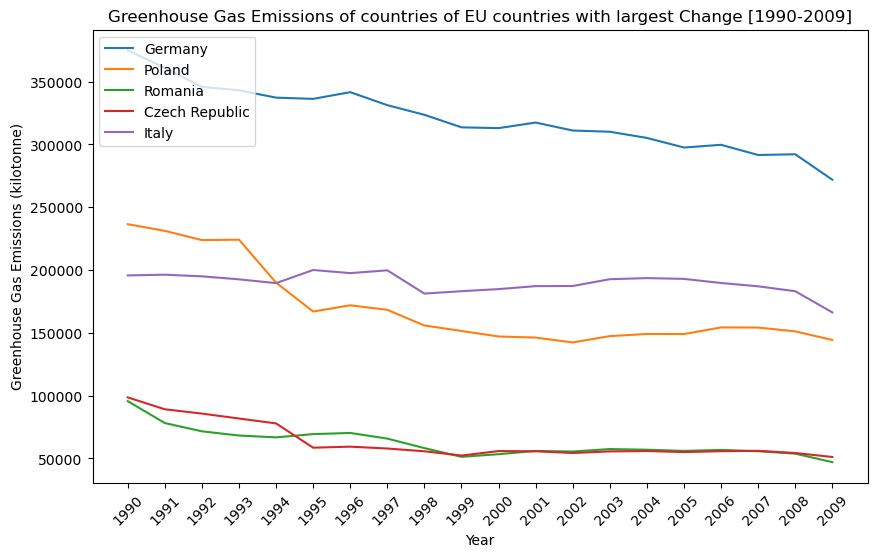
#creating a pivot table
not_europe_index1 = pd.pivot_table(not_europe_index,values="value",columns="year",index="country_or_area")
# Removing the data entry for european union
not_europe_index1 = not_europe_index1.drop("European Union",axis=0)
not_europe_index1['Difference'] = abs(not_europe_index1[1990] - not_europe_index1[2009])
not_europe_index_change = not_europe_index1.sort_values(by="Difference",ascending=False)
not_europe_index_change = not_europe_index_change.iloc[0:5]
not_eu_change_flipped = not_europe_index_change.drop('Difference',axis=1).T
fig = plt.subplots(figsize = (10,6), dpi = 100)
plt.plot(not_eu_change_flipped)
plt.legend(not_eu_change_flipped.columns.values,loc='lower left');
plt.xticks(range(1990,2010),rotation=45)
plt.title("Greenhouse Gas Emissions of countries of Non-EU countries with largest Change [1990-2009]");
plt.xlabel("Year");
plt.ylabel("Greenhouse Gas Emissions (kilotonne)");
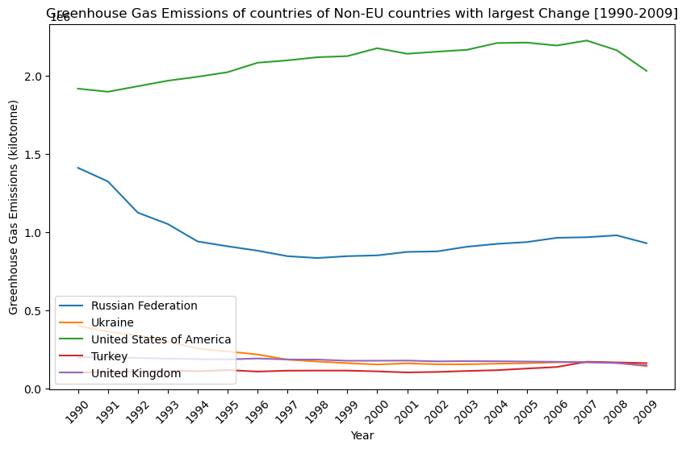
It is interesting to note that EU countries have had a decrease in greenhouse gas emissions with Germany showing the largest decrease. Countries outside of EU have not performed as well as can be seen by the second figure. The United States has seen a steady increrase in emissions between 1990 and 2007 which falls off slighlty after 2007.
European Union Countries, especially Germany, have employed strict laws and policies that aim to reduce their carbon footprint. Our initial analysis of the above graphs indicates countries that have active (and effective) climate policies. The climate policy tables are cleaned below to confirm which countries visualized above do in fact have a carbon tax, or another climate policy implemented.
# EU (Germany, Finland, Italy, France, Poland) have carbon tax
climate_policy_eu = climate_policy[climate_policy['Jurisdiction covered'].isin(['Germany', 'Finland', 'Italy',
'France', 'Poland'])]
climate_policy_eu.head()
| Name of the initiative | Type | Status | Type of juridiction covered | Jurisdiction covered | World Bank region | Year of abolishment | GHG emissions covered [MtCO2e] | Proportion of global GHG emissions covered | Government income, previous year | Value [billion US$] | Initiatives with overlapping GHG emissions covered | Covered GHG emissions overlapping with other initiatives [MtCO2e] | Year Implemented | |
|---|---|---|---|---|---|---|---|---|---|---|---|---|---|---|
| 25 | Finland carbon tax | Carbon tax | Implemented | National | Finland | Europe and Central Asia | 0 | 40.656934 | 0.000750 | 1.419630 | 1.419630 | EU ETS | 15.043065 | 1990 |
| 26 | France carbon tax | Carbon tax | Implemented | National | France | Europe and Central Asia | 0 | 171.657987 | 0.003169 | 8.967523 | 8.967523 | NaN | NaN | 2014 |
| 28 | Germany ETS | ETS | Scheduled | National | Germany | Europe and Central Asia | 0 | 398.620400 | 0.007358 | NaN | 0.000000 | NaN | NaN | 2021 |
| 61 | Poland carbon tax | Carbon tax | Implemented | National | Poland | Europe and Central Asia | 0 | 16.091961 | 0.000297 | 0.001118 | 0.001118 | NaN | NaN | 1990 |
# EU law climate table
law_climate_eu = law_climate_global[law_climate_global['Geography'].isin(['Germany', 'Finland', 'Italy',
'France', 'Poland'])]
germany = law_climate_global[law_climate_global['Geography']=='Germany']
finland = law_climate_global[law_climate_global['Geography']=='Finland']
italy = law_climate_global[law_climate_global['Geography']=='Italy']
france = law_climate_global[law_climate_global['Geography']=='France']
poland = law_climate_global[law_climate_global['Geography']=='Poland']
# Not EU (Canada, Russian Federation, Turkey, Ukraine, United States) only climate policy
climate_policy_other = climate_policy[climate_policy['Jurisdiction covered'].isin(['Canada',
'Russian Federation',
'Turkey', 'Ukraine',
'United States'])]
climate_policy_other.head()
| Name of the initiative | Type | Status | Type of juridiction covered | Jurisdiction covered | World Bank region | Year of abolishment | GHG emissions covered [MtCO2e] | Proportion of global GHG emissions covered | Government income, previous year | Value [billion US$] | Initiatives with overlapping GHG emissions covered | Covered GHG emissions overlapping with other initiatives [MtCO2e] | Year Implemented | |
|---|---|---|---|---|---|---|---|---|---|---|---|---|---|---|
| 12 | Canada federal OBPS | ETS | Implemented | National | Canada | North America | 0 | 70.948687 | 0.001310 | NaN | 0.000000 | NaN | NaN | 2019 |
| 13 | Canada federal fuel charge | Carbon tax | Implemented | National | Canada | North America | 0 | 155.334199 | 0.002867 | 1.371070 | 3.010832 | NaN | NaN | 2019 |
| 89 | Ukraine carbon tax | Carbon tax | Implemented | National | Ukraine | Europe and Central Asia | 0 | 221.221332 | 0.004083 | 0.047692 | 0.047692 | NaN | NaN | 2011 |
law_climate_other = law_climate_global[law_climate_global['Geography'].isin(['Canada','Russian Federation',
'Turkey', 'Ukraine',
'United States'])]
law_climate_other.head()
| Title | Type | Geography | Geography ISO | Frameworks | Responses | Instruments | Document Types | Natural Hazards | Keywords | Sectors | Events | Documents | Parent Legislation | Description | Date | Year | |
|---|---|---|---|---|---|---|---|---|---|---|---|---|---|---|---|---|---|
| 321 | Energy Efficiency Act (S.C. 1992, c. 36) | legislative | Canada | CAN | NaN | Mitigation | NaN | Law | NaN | Energy Demand | Energy | 25/12/1992|Law passed;25/12/2008|Last amended | NaN | NaN | The Act aims to establish minimum energy effic... | 1992-12-25 | 1992 |
| 322 | Canada Foundation for Sustainable Development ... | legislative | Canada | CAN | NaN | Mitigation | NaN | Law | NaN | Energy Supply | Health, Water | 14/06/2001|Law passed | NaN | NaN | This Act establishes a not-for-profit foundati... | 2001-06-14 | 2001 |
| 323 | The Canadian Environmental Protection Act 1999... | legislative | Canada | CAN | NaN | Mitigation | NaN | Law | NaN | Carbon Pricing, Energy Supply, Energy Demand, ... | Energy, Transportation, Waste, Water | 31/03/2000|Law passed|| | NaN | NaN | <div>The CEPA 1999, or the Canadian Environmen... | 2000-03-31 | 2000 |
| 324 | Heavy-duty Vehicle and Engine Greenhouse Gas E... | executive | Canada | CAN | NaN | Mitigation | Standards and obligations|Regulation | Regulation/Rules | NaN | Transportation | Transportation | 22/02/2013|Law passed||;16/07/2015|Amended||;1... | Full text|https://climate-laws.org/rails/activ... | The Canadian Environmental Protection Act 1999... | <div>The purpose of these Regulations is to re... | 2013-02-22 | 2013 |
| 325 | Reduction of Carbon Dioxide Emissions from Coa... | executive | Canada | CAN | NaN | Mitigation | Standards and obligations|Regulation;Monitorin... | Regulation/Rules | NaN | Energy Supply, Coal, Electricity | Energy, Transportation | 25/12/2012|Law passed||;01/07/2015|Amended by ... | Full text|https://climate-laws.org/rails/activ... | The Canadian Environmental Protection Act 1999... | <div> These Regulations establish a regim... | 2012-12-25 | 2012 |
Overall, it is clear that EU countries have more consistently implemented climate policies.
Analyzing Average Temperature changes of countries [1990-2009]
grouped_temp = temp_data.groupby('Country')['State'].count().reset_index()
grouped_temp.Country.values
array(['Australia', 'Brazil', 'Canada', 'China', 'India', 'Russia',
'United States'], dtype=object)
temp_use = temp_data[temp_data['Year'].isin(np.arange(1990,2010))]
temp_use.head(1)
| dt | AverageTemperature | AverageTemperatureUncertainty | State | Country | Year | |
|---|---|---|---|---|---|---|
| 1616 | 1/1/1990 | 25.881 | 0.297 | Acre | Brazil | 1990 |
temp_data_country = temp_use[temp_use['Country'].isin(['Australia', 'Brazil', 'Canada', 'China', 'India', 'Russia','United States'])]
temp_data_country = temp_data_country.drop(["State","AverageTemperatureUncertainty","dt"],axis=1)
fig, scatter = plt.subplots(figsize = (10,6), dpi = 100)
sns.set_style("ticks")
scatter = sns.lineplot(x="Year", y = "AverageTemperature",data=temp_data_country,hue="Country",style="Country",markers=True,dashes=False,hue_order=['Australia', 'Brazil', 'Canada', 'China', 'India', 'Russia','United States'])
plt.title("Average Temperature [1990-2009]");
plt.xlabel("Year");
plt.ylabel("Average Temperature (C)");
scatter.set_xticks(range(1990,2010));
plt.xticks(rotation=45);
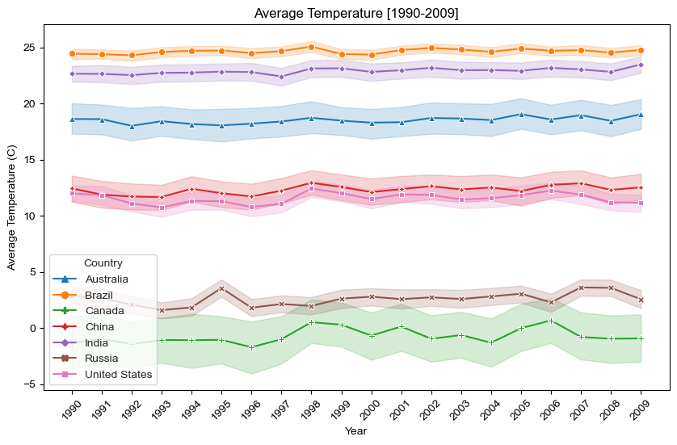
As seen from the graph above, the countries vary in their average temperature across the years. Repeated values of state temperatures for each country are aggregated to show the mean and 95% confidence interval in the figure above. Polar countries like Canada and Russia have a lower average temperature all while tropical countries such as Brazil and India have much higher average temperature.
Because of this it is difficult to see any trends or analyze the temperature changes across the years. To better understand how temperature changes, we constructed a function (norm) that normalizes a given temperature based on the low and high temperature. This is then applied to the above countries and a graph is obtained below.
# Defining a normalizing function to take into account temperature maximums and minimums
def norm(array):
low = min(array)
high = max(array)
new = []
for i in np.arange(len(array)):
norm = (i - low)/(high-low)
new.append(norm)
return new
# First average over each year among states, then normalize
braz = temp_use[temp_use['Country']=='Brazil'].groupby('Year')['AverageTemperature'].mean().to_list()
aus = temp_use[temp_use['Country']=='Australia'].groupby('Year')['AverageTemperature'].mean().to_list()
can = temp_use[temp_use['Country']=='Canada'].groupby('Year')['AverageTemperature'].mean().to_list()
chin = temp_use[temp_use['Country']=='China'].groupby('Year')['AverageTemperature'].mean().to_list()
ind = temp_use[temp_use['Country']=='India'].groupby('Year')['AverageTemperature'].mean().to_list()
rus = temp_use[temp_use['Country']=='Russia'].groupby('Year')['AverageTemperature'].mean().to_list()
us = temp_use[temp_use['Country']=='United States'].groupby('Year')['AverageTemperature'].mean().to_list()
together = braz + aus + can + chin + ind + rus + us
high = max(together)
low = min(together)
n_braz = norm(braz)
n_aus = norm(aus)
n_can = norm(can)
n_chin = norm(chin)
n_ind = norm(ind)
n_rus = norm(rus)
n_us = norm(us)
years = np.arange(1990,2010)
normed_temp = pd.DataFrame({'Australia':n_aus,'Brazil':n_braz,'Canada':n_can,'China':n_chin,
'India':n_ind,'Russia':n_rus,'United States':n_us})
normed_temp['Year'] = np.arange(1990,2010)
normed_temp = normed_temp.set_index('Year')
normed_temp.head(1)
| Australia | Brazil | Canada | China | India | Russia | United States | |
|---|---|---|---|---|---|---|---|
| Year | |||||||
| 1990 | -17.424459 | -31.104308 | 0.713512 | -9.19949 | -20.978809 | -0.792588 | -6.395877 |
fig = plt.subplots(figsize = (10,6), dpi = 100)
plt.plot(normed_temp)
plt.legend(normed_temp.columns.values);
plt.title("Normalized Average Temperature [1990-2009]");
plt.xlabel("Year");
plt.ylabel("Normalized Average Temperature (C)");
plt.xticks(range(1990,2010));
plt.xticks(rotation=45);
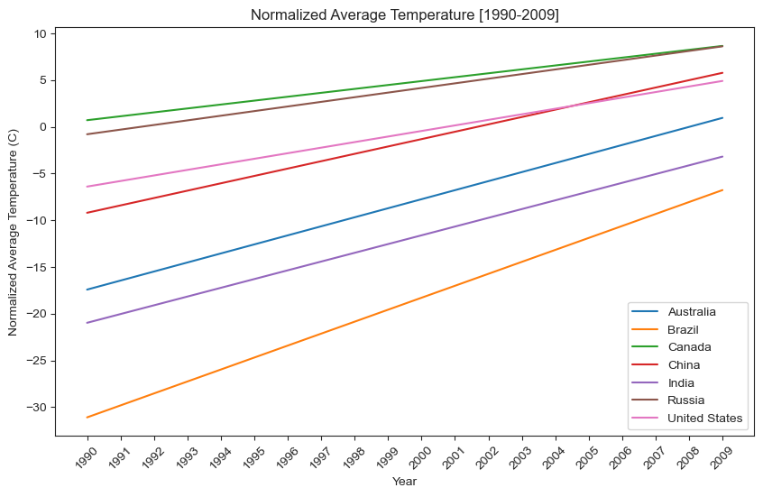
This graph is a much better representation of average temperature after it has been normalized by each region. The visualization above clearly shows that the temperature in the represented countries has been on a steady increase since 1990.
Gross National Income and Greenhouse Gas Emissions Relationship
This section explores the differing climate change effects on the country level and helps us build a foundational understanding for Part One of our study. The following analysis is an attempt to examine how climate change disproportionately affects different countries, putting an emphasis on the differential impacts of climate change between countries with significant variance in income per capita.
gni = indicators_nan[indicators_nan['Series code']=='NY.GNP.PCAP.CD']
gni_ours = gni[gni['Country name'].isin(['Australia', 'Brazil','Canada',
'China', 'India', 'Russian Federation', 'United States'])].drop(['Country code','Series code',
'Series name', 'SCALE', 'Decimals',
'2010', '2011'], axis=1).set_index('Country name')
gni_use = gni_ours.T
gni_use.head(1)
| Country name | Australia | Brazil | Canada | China | India | Russian Federation | United States |
|---|---|---|---|---|---|---|---|
| 1990 | 17420.0 | 2700.0 | 20150.0 | 330.0 | 390.0 | NaN | 23260.0 |
fig = plt.subplots(figsize = (10,6), dpi = 100)
plt.plot(gni_use)
plt.legend(gni_use.columns.values)
plt.xticks(rotation=45);
plt.title("Gross National Income (GNI) per capita in USD [1990-2009]");
plt.xlabel("Year");
plt.ylabel("Gross National Income per Capita ($)");
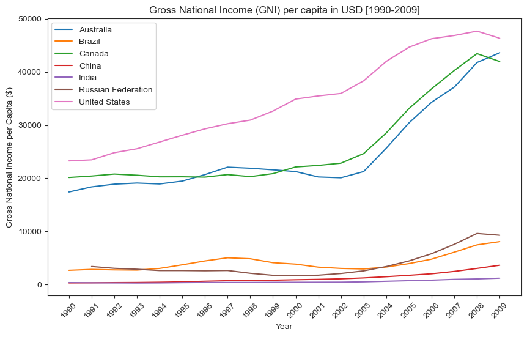
Gathering GHG data for same countries
per_cap_ghg = indicators[indicators['Series code']=='EN.ATM.CO2E.PC']
our_ghg = per_cap_ghg[per_cap_ghg['Country name'].isin(['Australia', 'Brazil','Canada',
'China', 'India', 'Russian Federation', 'United States'])]
our_ghg.head(1)
| Country code | Country name | Series code | Series name | SCALE | Decimals | 1990 | 1991 | 1992 | 1993 | ... | 2002 | 2003 | 2004 | 2005 | 2006 | 2007 | 2008 | 2009 | 2010 | 2011 | |
|---|---|---|---|---|---|---|---|---|---|---|---|---|---|---|---|---|---|---|---|---|---|
| 1874 | AUS | Australia | EN.ATM.CO2E.PC | CO2 emissions per capita (metric tons) | 0 | 1 | 16.84 | 16.29 | 16.83 | 17.1 | ... | 17.37 | 17.41 | 17.35 | 18.01 | 18.23 | 18.07 | 18.57 | NaN | NaN | NaN |
1 rows × 28 columns
ghg_data = our_ghg.drop(['Country code','Series code','Series name', 'SCALE',
'Decimals', '2010', '2011'], axis=1).set_index('Country name')
ghg_data_flip = ghg_data.T
column_means = ghg_data_flip.mean()
ghg_user = ghg_data_flip.fillna(column_means)
ghg_user.head(1)
| Country name | Australia | Brazil | Canada | China | India | Russian Federation | United States |
|---|---|---|---|---|---|---|---|
| 1990 | 16.84 | 1.4 | 16.2 | 2.17 | 0.81 | 11.488824 | 19.55 |
fig = plt.subplots(figsize = (10,6), dpi = 100)
plt.plot(ghg_user)
plt.xticks(rotation=45)
plt.legend(ghg_user.columns.values);
plt.title("Greenhouse Gas (GHG) Emissions per capita in metric tonnes [1990-2009]");
plt.xlabel("Year");
plt.ylabel("Greenhouse Gas Emissions per capita (metric tons)");
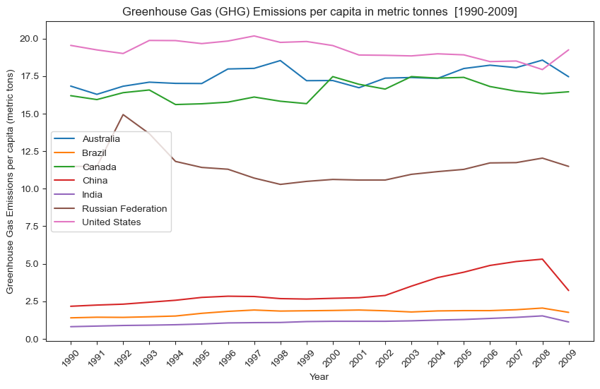
fig = plt.subplots(figsize = (10,6), dpi = 100)
plt.scatter(ghg_user['Australia'], gni_use['Australia'],label='Australia')
plt.scatter(ghg_user['Brazil'], gni_use['Brazil'],label='Brazil')
plt.scatter(ghg_user['Canada'], gni_use['Canada'],label='Canada')
plt.scatter(ghg_user['China'], gni_use['China'],label='China')
plt.scatter(ghg_user['India'], gni_use['India'],label='India')
plt.scatter(ghg_user['Russian Federation'], gni_use['Russian Federation'],label='Russian Federation')
plt.scatter(ghg_user['United States'], gni_use['United States'],label='United States',color='pink')
plt.legend()
plt.xlabel('Greenhouse gas emissions per capita (metric tonnes)')
plt.ylabel('GNI per capita ($)')
plt.title('GNI vs GHG per capita');
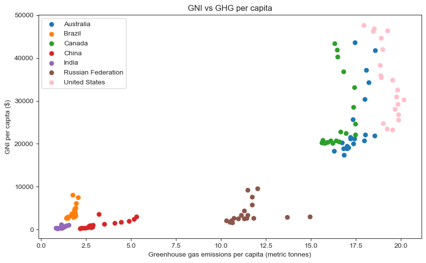
This visualization provides clear evidence that GNI per capita and GHG emissions per capita are strongly positively correlated. Looking at these specific seven countries, those with low GNI per capita have low GHG emissions and those with high GNI per capita have high GHG emissions per capita. The only slight anomaly is Russia, which has a low GNI per capita (comparable to India, Brazil, and China) but relatively high GHG emissions per capita.
Plotting GHG and Average Temperature over 20 year period, with markers for years that climate policies were implemented.
brazt = temp_use[temp_use['Country']=='Brazil'].groupby('Year')['AverageTemperature'].mean().to_list()
aust = temp_use[temp_use['Country']=='Australia'].groupby('Year')['AverageTemperature'].mean().to_list()
cant = temp_use[temp_use['Country']=='Canada'].groupby('Year')['AverageTemperature'].mean().to_list()
chint = temp_use[temp_use['Country']=='China'].groupby('Year')['AverageTemperature'].mean().to_list()
indt = temp_use[temp_use['Country']=='India'].groupby('Year')['AverageTemperature'].mean().to_list()
rust = temp_use[temp_use['Country']=='Russia'].groupby('Year')['AverageTemperature'].mean().to_list()
ust = temp_use[temp_use['Country']=='United States'].groupby('Year')['AverageTemperature'].mean().to_list()
avg_temp = pd.DataFrame({'Year':np.arange(1990,2010),'Australia':aust - np.mean(aust),'Brazil':brazt - np.mean(brazt),'Canada':cant- np.mean(cant),'China':chint - np.mean(chint),
'India':indt - np.mean(indt),'Russia':rust - np.mean(rust),'United States':ust - np.mean(ust)}).set_index('Year')
#Plotting
fig, ax1 = plt.subplots(figsize = (8,5), dpi = 100)
t = np.arange(1990,2010)
color = 'tab:red'
ax1.set_xlabel('Year')
ax1.set_ylabel('Average Temperature (C)', color=color)
ax1.plot(t, avg_temp['Australia'], color=color,marker='o')
ax1.tick_params(axis='y', labelcolor=color)
plt.xticks(range(1990,2010),rotation=45)
plt.ylim([-2,2])
#Normalizing ghg data with mean of row
ghg_data_norm = ghg_user.sub(np.mean(ghg_data,axis=1),axis=1)
ax2 = ax1.twinx() # instantiate a second axes that shares the same x-axis
color = 'tab:blue'
ax2.set_ylabel('GHG per capita', color=color) # we already handled the x-label with ax1
ax2.plot(t, ghg_data_norm['Australia'], color=color, marker='o')
ax2.tick_params(axis='y', labelcolor=color)
plt.xticks(range(1990,2010),rotation=45)
plt.ylim([-2,2])
plt.title('Australia')
plt.axvline(x=2000,linewidth=1,color='black',linestyle='dashed')
plt.axvline(x=2006,linewidth=1,color='black',linestyle='dashed')
plt.axvline(x=2008,linewidth=1,color='black',linestyle='dashed')
fig.tight_layout() # otherwise the right y-label is slightly clipped
plt.show()
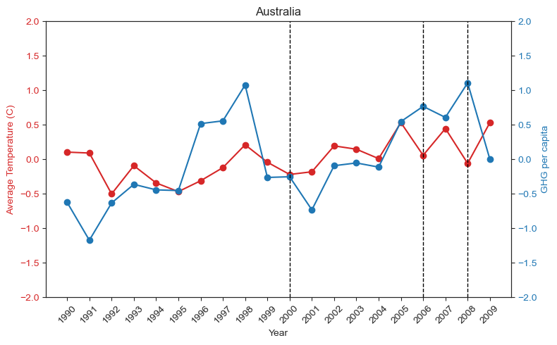
The above graph shows the trend of how temperature and greenhouse gas emissions have changed across the years. The dotted lines indicate climate laws that have been passed in the year 2000, 2006 and 2008.
For ease of comparison between temperature and greenhouse gas emissions, the data is normalized by subtracting from the mean.
The three laws that were passed in Australia in 2000, 2006, and 2008 as well as their descriptions are shown below in the aus_laws table.
aus = law_climate_global[law_climate_global["Geography"] == "Australia"]
aus_laws = aus[aus["Document Types"] == "Law"]
aus_laws = aus_laws[aus_laws["Year"].isin([2000,2006,2008])]
aus_laws.head()
| Title | Type | Geography | Geography ISO | Frameworks | Responses | Instruments | Document Types | Natural Hazards | Keywords | Sectors | Events | Documents | Parent Legislation | Description | Date | Year | |
|---|---|---|---|---|---|---|---|---|---|---|---|---|---|---|---|---|---|
| 97 | Offshore Petroleum and Greenhouse Gas Storage ... | legislative | Australia | AUS | NaN | Mitigation | NaN | Law | NaN | Energy Supply | Health, Water | 29/03/2006|Enactment of specific provisions;01... | NaN | NaN | The Act aims to provide an effective regulator... | 2006-03-29 | 2006 |
| 98 | National Greenhouse and Energy Reporting Act 2007 | legislative | Australia | AUS | NaN | Mitigation | NaN | Law | NaN | Institutions / Administrative Arrangements, En... | Energy | 01/07/2008|First reporting period commenced;29... | NaN | NaN | The Act establishes the legislative framework ... | 2008-01-07 | 2008 |
| 101 | Renewable Energy (Electricity) Act 2000 | legislative | Australia | AUS | NaN | Mitigation | NaN | Law | NaN | Institutions / Administrative Arrangements, En... | Agriculture, Energy, Waste, Water | 21/12/2000|Law passed;01/03/2016|Last amendment | Full text|https://climate-laws.org/rails/activ... | NaN | The Renewable Energy (Electricity) Act 2000 in... | 2000-12-21 | 2000 |
aus_laws["Description"].iloc[2]
'The Renewable Energy (Electricity) Act 2000 in its latest version as of 10 March 2016, also called "Act for the establishment and administration of a scheme to encourage additional electricity generation from renewable energy sources, and for related purposes", aims to:<br />\n<ul><br />\n<li> "encourage the additional generation of electricity from renewable sources; </li><br />\n<li> reduce emissions of greenhouse gases in the electricity sector; and</li><br />\n<li> ensure that renewable energy sources are ecologically sustainable" (Art 3).</li><br />\n</ul><br />\nThese objectives are to be reached through issuing of certificates for the generation of electricity, with two types of renewable energy certificates:<br />\n<br />\n<ul><br />\n<li>large?scale generation certificates, created in relation to the generation of electricity by accredited power stations; and</li><br />\n<li>small?scale technology certificates, created in relation to the installation of solar water heaters and small generation units (Art 17B).</li><br />\n</ul><br />\nThe certificates can only be issued for eligible renewable energy sources, including hydro, wave, tide, ocean, wind, solar, geothermal?aquifer, hot dry rock, energy crops, wood waste, agricultural waste, waste from processing of agricultural products, food waste, food processing waste, bagasse, black liquor, biomass?based components of municipal solid waste, landfill gas, sewage gas and biomass?based components of sewage, and any other energy source prescribed by the regulations. (Art 17).<br />\nCertain purchasers (called liable entities) are required to surrender a specified number of certificates for the electricity that they acquire during a year.<br />\nLiable entity is defined as "a person who, during a year, makes a relevant acquisition (wholesale acquisition or wholesale notional acquisition - <em>author\'s note</em>) of electricity" (Art 35). Exemption applies if:<br />\n<br />\n<ol><br />\n<li> "the electricity was delivered on a grid that has a capacity that is less than 100 MW and that is not, directly or indirectly, connected to a grid that has a capacity of 100 MW or more; or</li><br />\n<li> the end user of the electricity generated the electricity and either of the following conditions are satisfied: (i) the point at which the electricity is generated is less than 1 km from the point at which the electricity is used; (ii) the electricity is transmitted or distributed between the point of generation and the point of use and the line on which the electricity is transmitted or distributed is used solely for the transmission or distribution of electricity between those 2 points" (Art 31).</li><br />\n</ol><br />\nWhere a liable entity does not have enough certificates to surrender in a year, it will have to pay renewable energy shortfall charge. There are 2 types of renewable energy shortfall charge:<br />\n<br />\n<ol><br />\n<li>"large?scale generation shortfall charge, which is calculated by reference to a liable entity\'s relevant acquisitions of electricity, its exemptions, the number of large?scale generation certificates it surrenders and the renewable energy power percentage; and</li><br />\n<li>small?scale technology shortfall charge, which is calculated by reference to a liable entity\'s relevant acquisitions of electricity, its exemptions, the number of small?scale technology certificates it surrenders and the small?scale technology percentage" (Art 34A).</li><br />\n</ol><br />'
As seen from the description, this law was implemented to shift Australia to renewable energy sources, such as solar, wind, biofuels. Although these should reduce greenhouse emissions, there is not a consistent decrease as can be seen in the above graph. This goes to show that there may not be a direct correlation between the two variables (policy and GHG emissions) and could make GHG emissions difficult to predict, especially with just one feature (policy).
carbon_tax = pd.read_csv('carbontax_policies.csv')
carbon_year_sort = carbon_tax.sort_values('Year of implementation')
carbon_year_sort.sample(5)
| Name of the initiative | Type | Status | Type of juridiction covered | Jurisdiction covered | World Bank region | Year of implementation | Year of abolishment | GHG emissions covered [MtCO2e] | Proportion of global GHG emissions covered | Government income, previous year | Value [billion US$] | Initiatives with overlapping GHG emissions covered | Covered GHG emissions overlapping with other initiatives [MtCO2e] | |
|---|---|---|---|---|---|---|---|---|---|---|---|---|---|---|
| 81 | Taiwan ETS | ETS | Under consideration | Subnational | Taiwan | East Asia & Pacific | TBC | 0 | NaN | NaN | NaN | 0.000000 | NaN | NaN |
| 55 | Norway carbon tax | Carbon tax | Implemented | National | Norway | Europe and Central Asia | 1991 | 0 | 46.538717 | 0.000859 | 1.374223 | 1.454774 | EU ETS | 13.853025 |
| 73 | Singapore carbon tax | Carbon tax | Implemented | National | Singapore | East Asia & Pacific | 2019 | 0 | 44.782400 | 0.000827 | 0.000000 | 0.134295 | NaN | NaN |
| 78 | Switzerland ETS | ETS | Implemented | National | Switzerland | Europe and Central Asia | 2008 | 0 | 6.041530 | 0.000112 | 0.008866 | 0.116563 | NaN | NaN |
| 22 | Denmark carbon tax | Carbon tax | Implemented | National | Denmark | Europe and Central Asia | 1992 | 0 | 25.276499 | 0.000467 | 0.519979 | 0.534777 | EU ETS | 0.000000 |
Climate change policies, as shown in the data table above, have been implemented across various time frames. As discussed in our EDA, a climate policy has long term effects and cannot be directly linked to changes in indicators such as temperature or greenhouse gas emissions immediatly following implementation.
Therefore, for our model we focus on countries that have been early adopters of climate policies (such as carbon tax): Finland, Poland, Norway, Sweden, Denmark. These countries (and their respective indicator values) will make up the training data used to train the model
ghg_only = ghg_emissions[ghg_emissions['category']=='greenhouse_gas_ghgs_emissions_including_indirect_co2_without_lulucf_in_kilotonne_co2_equivalent']
ghg_only_helper = ghg_only.drop('category',axis=1)
ghg_only_flipped = pd.pivot_table(ghg_only_helper, values='value',index='year',columns='country_or_area')
ghg_only_flipped.head(1)
| country_or_area | Australia | Austria | Belarus | Belgium | Canada | Croatia | Cyprus | Czech Republic | Denmark | Estonia | ... | Portugal | Romania | Russian Federation | Slovakia | Slovenia | Sweden | Switzerland | Turkey | Ukraine | United States of America |
|---|---|---|---|---|---|---|---|---|---|---|---|---|---|---|---|---|---|---|---|---|---|
| year | |||||||||||||||||||||
| 1990 | 418623.0496 | 78844.62726 | 133457.162 | 146021.2368 | 616908.1109 | 31204.63126 | 5624.649922 | 198621.2408 | 71470.18321 | 39965.16872 | ... | 60552.01255 | 254999.1229 | 3767555.044 | 74271.51068 | 18616.4491 | 71917.25959 | 53719.9849 | 207773.3211 | 937954.2038 | 6397144.49 |
1 rows × 38 columns
Pivot Table shows greenhouse gas emission data from ghg_emissions table for each country from 1990 to 2010.
# Creating ghg table
ghg_5 = ghg_only[ghg_only['country_or_area'].isin(['Finland', 'Poland', 'Norway', 'Sweden', 'Denmark'])]
ghg_5 = ghg_5[ghg_5['year'].isin(np.arange(1990,2011))]
ghg_5.head(5)
| country_or_area | year | value | category | |
|---|---|---|---|---|
| 1278 | Denmark | 2010 | 63499.83666 | greenhouse_gas_ghgs_emissions_including_indire... |
| 1279 | Denmark | 2009 | 63066.65781 | greenhouse_gas_ghgs_emissions_including_indire... |
| 1280 | Denmark | 2008 | 65963.76336 | greenhouse_gas_ghgs_emissions_including_indire... |
| 1281 | Denmark | 2007 | 69661.17965 | greenhouse_gas_ghgs_emissions_including_indire... |
| 1282 | Denmark | 2006 | 74321.35766 | greenhouse_gas_ghgs_emissions_including_indire... |
ghg_5 has greenhouse gas emissions which is our predictor variable i.e. carbon dioxide emissions in killotonne of CO2 equivalent for our selected countries. The next step is to obtain the features (climate indicators) for the selected countries.
indicators_5 = indicators_nan[indicators_nan['Country name'].isin(['Finland', 'Poland', 'Norway', 'Sweden'
, 'Denmark'])]
indicators_5 = indicators_5.drop(['Country code','SCALE','Decimals','Series name'], axis=1)
indicators_5.head(1)
| Country name | Series code | 1990 | 1991 | 1992 | 1993 | 1994 | 1995 | 1996 | 1997 | ... | 2002 | 2003 | 2004 | 2005 | 2006 | 2007 | 2008 | 2009 | 2010 | 2011 | |
|---|---|---|---|---|---|---|---|---|---|---|---|---|---|---|---|---|---|---|---|---|---|
| 519 | Denmark | AG.YLD.CREL.KG | 6117.9 | 5911.5 | 4314.2 | 5677.6 | 5530.5 | 6291.1 | 6052.5 | 6207.2 | ... | 5761.8 | 6096.6 | 6013.1 | 6153.3 | 5778.3 | 5675.7 | 6017.3 | 6775.9 | NaN | NaN |
1 rows × 24 columns
Features for each country are formatted into a pivot table (with year column) and then all values are are concatenated to obtain a feature matrix.
finland = indicators_5[indicators_5['Country name']=='Finland']
finland_pivot = pd.pivot_table(finland, columns='Series code')
finland_pivot['Country'] = 'Finland'
poland = indicators_5[indicators_5['Country name']=='Poland']
poland_pivot = pd.pivot_table(finland, columns='Series code')
poland_pivot['Country'] = 'Poland'
norway = indicators_5[indicators_5['Country name']=='Norway']
norway_pivot = pd.pivot_table(norway, columns='Series code')
norway_pivot['Country'] = 'Norway'
sweden = indicators_5[indicators_5['Country name']=='Sweden']
sweden_pivot = pd.pivot_table(sweden, columns='Series code')
sweden_pivot['Country'] = 'Sweden'
denmark = indicators_5[indicators_5['Country name']=='Denmark']
denmark_pivot = pd.pivot_table(denmark, columns='Series code')
denmark_pivot['Country'] = 'Denmark'
countries = [finland_pivot,poland_pivot,norway_pivot,sweden_pivot,denmark_pivot]
almost = pd.concat(countries).reset_index()
almost['index'] = almost['index'].astype(int)
almost.head(1)
| index | AG.YLD.CREL.KG | BX.KLT.DINV.WD.GD.ZS | EG.USE.COMM.GD.PP.KD | EG.USE.PCAP.KG.OE | EN.CLC.GHGR.MT.CE | EN.URB.MCTY.TL.ZS | ER.LND.PTLD.ZS | NY.GDP.MKTP.CD | NY.GNP.PCAP.CD | SE.ENR.PRSC.FM.ZS | SE.PRM.CMPT.ZS | SH.DYN.MORT | SP.POP.GROW | SP.POP.TOTL | SP.URB.GROW | SP.URB.TOTL | Country | |
|---|---|---|---|---|---|---|---|---|---|---|---|---|---|---|---|---|---|---|
| 0 | 1990 | 3543.1 | 0.58 | 245.99 | 5692.06 | -15.038182 | 17.47 | 4.25 | 1.388447e+11 | 25210.0 | 108.71 | 101.89 | 6.7 | 0.48 | 4986000.0 | 1.01 | 3061404.0 | Finland |
The feature data are then merged with the greenhouse gas emission data based on country and year and the data is stored in finale dataframe
#Dropped features with NaN values
final = almost.merge(ghg_5,left_on='index',right_on='year').drop(['category','country_or_area','index'],axis=1).dropna()
cols = final.columns.tolist()
cols = cols[-1:] + cols[:-1]
final_2 = final[cols]
cols_2 = final_2.columns.tolist()
cols_2 = cols_2[-1:] + cols_2[:-1]
final_3 = final_2[cols_2]
cols_3 = final_3.columns.tolist()
cols_3 = cols_3[-1:] + cols_3[:-1]
finale = final_3[cols_3]
# Hardcode fix
finale = finale[finale['value']<100000]
finale
finale.head(1)
| Country | year | value | AG.YLD.CREL.KG | BX.KLT.DINV.WD.GD.ZS | EG.USE.COMM.GD.PP.KD | EG.USE.PCAP.KG.OE | EN.CLC.GHGR.MT.CE | EN.URB.MCTY.TL.ZS | ER.LND.PTLD.ZS | NY.GDP.MKTP.CD | NY.GNP.PCAP.CD | SE.ENR.PRSC.FM.ZS | SE.PRM.CMPT.ZS | SH.DYN.MORT | SP.POP.GROW | SP.POP.TOTL | SP.URB.GROW | SP.URB.TOTL | |
|---|---|---|---|---|---|---|---|---|---|---|---|---|---|---|---|---|---|---|---|
| 0 | Finland | 1990 | 71470.18321 | 3543.1 | 0.58 | 245.99 | 5692.06 | -15.038182 | 17.47 | 4.25 | 1.388447e+11 | 25210.0 | 108.71 | 101.89 | 6.7 | 0.48 | 4986000.0 | 1.01 | 3061404.0 |
LASSO Regression
LASSO Regression is performed on the finale dataframe to predict countries greenhouse gas emissions.
%matplotlib inline
from sklearn.model_selection import train_test_split
from sklearn.linear_model import Ridge, Lasso, LinearRegression
from sklearn.model_selection import KFold
from sklearn.model_selection import cross_val_score
from sklearn.model_selection import cross_val_predict
from sklearn.metrics import r2_score
from scipy import stats
# Run this cell to suppress all Convergence warnings
from sklearn.exceptions import ConvergenceWarning
import warnings
warnings.filterwarnings("ignore", category=ConvergenceWarning)
# Assigning predictor matrix and feature matrix
X = finale.drop(['Country','value','AG.YLD.CREL.KG','BX.KLT.DINV.WD.GD.ZS'],axis=1)
y = finale['value']
#Creating test, train and validation sets
np.random.seed(10)
X_train, X_test, y_train, y_test = train_test_split(X, y, train_size=.80, test_size=.20)
X_train_v, X_validate, y_train_v, y_validate = train_test_split(X_train, y_train, train_size=.75, test_size=.25)
# Fitting LASSO model
lasso = Lasso(max_iter=10000,alpha=.0001)
lasso_fit = lasso.fit(X_train,y_train)
# use the model to make predictions
lasso_pred = lasso_fit.predict(X_train_v)
# plot the predictions
fig, scatter = plt.subplots(figsize = (10,6), dpi = 100)
plt.scatter(y_train_v,lasso_pred)
plt.xlabel('Actual Values')
plt.ylabel('Predicted Values')
plt.title('LASSO Model');
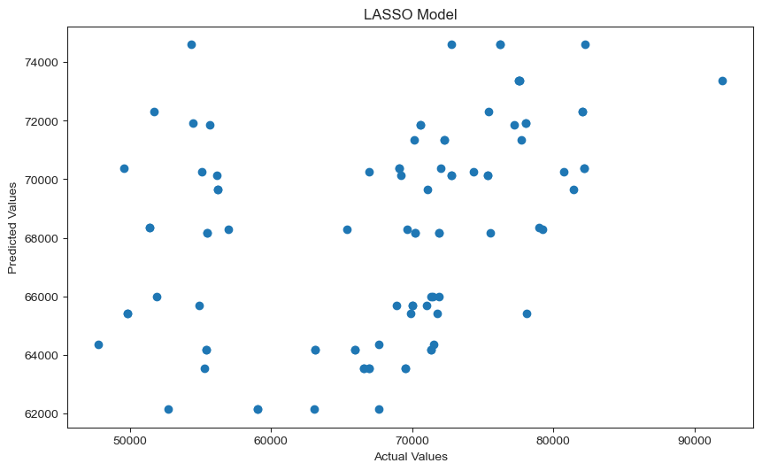
fig, scatter = plt.subplots(figsize = (10,6), dpi = 100)
plt.scatter(np.arange(len(y_train_v)),(y_train_v-lasso_pred))
plt.title('Residual Plot');
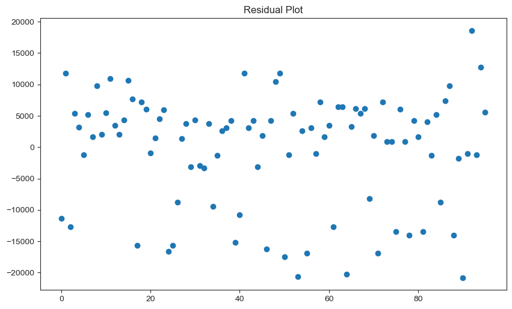
The LASSO model scatter plot does not appear to represent a useful predictive model; however, it is of significance to note that the GHG emission values that seem to be predicted the worst are those below 60,000. The predictive model performs much better on values greater than 60,000.
Below we will investigate the features that were highlighted by the LASSO regression model.?
coefficient_df = pd.DataFrame(lasso.coef_,np.array(X.columns)).rename(columns={0:"coefficient"})
coefficient_df
| coefficient | |
|---|---|
| year | 2.836423e+03 |
| EG.USE.COMM.GD.PP.KD | -2.334402e+02 |
| EG.USE.PCAP.KG.OE | 2.371850e+01 |
| EN.CLC.GHGR.MT.CE | -2.141162e+02 |
| EN.URB.MCTY.TL.ZS | -3.329773e+04 |
| ER.LND.PTLD.ZS | 2.839609e+02 |
| NY.GDP.MKTP.CD | -1.192481e-07 |
| NY.GNP.PCAP.CD | -8.167115e-01 |
| SE.ENR.PRSC.FM.ZS | -1.236953e+03 |
| SE.PRM.CMPT.ZS | 1.792570e+03 |
| SH.DYN.MORT | 1.267174e+04 |
| SP.POP.GROW | 1.029472e+05 |
| SP.POP.TOTL | 5.711499e-01 |
| SP.URB.GROW | -1.006567e+04 |
| SP.URB.TOTL | -3.147925e-01 |
coefficient_df.plot.barh(figsize = (8,6));
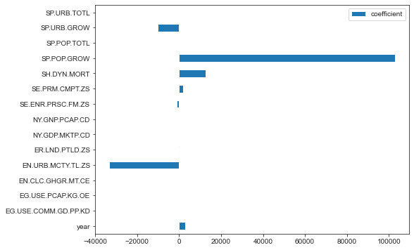
The above plot shows how the coefficients vary with each feature. LASSO conducts feature shrinkage and therefore coefficients that have a high absolute value are weighted higher and in turn have a greater influence on the predictor variable: greenhouse gas emissions. Lets look at what the features mean by comparing to indicators_legend dataframe
coefficient_helper = coefficient_df.reset_index().rename(columns={"index":"Series code"})
indicators_legend_2 = indicators_legend.reset_index().rename(columns={'level_0':'Series code','level_1':'Series name',
'level_2':'Scale','level_3':'Decimals',
'level_4':'Order','level_5':'Topic',
'level_6':'Definition'}).drop(0)
features = coefficient_helper.merge(indicators_legend_2,left_on='Series code',right_on="Series code")
features = features.drop(["coefficient","Scale","Decimals","Order"],axis=1)
features.head()
| Series code | Series name | Topic | Definition | indicatorslegend | |
|---|---|---|---|---|---|
| 0 | EG.USE.COMM.GD.PP.KD | Energy use per units of GDP (kg oil eq./$1,000... | GHG emissions and energy use | Energy use per units of GDP is the kilogram of... | International Energy Agency (IEA Statistics ©... |
| 1 | EG.USE.PCAP.KG.OE | Energy use per capita (kilograms of oil equiva... | GHG emissions and energy use | Energy use per capita refers to use of primary... | International Energy Agency (IEA Statistics ©... |
| 2 | EN.CLC.GHGR.MT.CE | GHG net emissions/removals by LUCF (MtCO2e) | GHG emissions and energy use | GHG net emissions/removals by LUCF refers to c... | United Nations Framework Convention on Climate... |
| 3 | EN.URB.MCTY.TL.ZS | Population in urban agglomerations >1million (%) | Exposure to impacts | Population in urban agglomerations of more tha... | United Nations, World Urbanization Prospects. |
| 4 | ER.LND.PTLD.ZS | Nationally terrestrial protected areas (% of t... | Exposure to impacts | Nationally terrestrial protected areas are tot... | United Nations Environmental Program and the W... |
SP.POP.GROW is the annual population growth rate for a particular year expressed as a percentage of the midyear population from its previous year. This feature has the largest coefficient and therefore is the most important feature in predicting greenhouse gas emissions of a country based on the LASSO model. Some other important features include:
EN.URB.MCTY.TL.ZS: the percentage of a country’s population living in metropolitan areas that in 2009 with a population of more than 1 million
SH.DYN.MORT: the Under-five mortality rate i.e. the probability per 1,000 that a newborn baby will die before reaching age five, if subject to current age-specific mortality rates.
def rmse(pred, actual):
return np.sqrt(np.mean((pred - actual) ** 2))
#Finding training error
print("RMSE: ",rmse(lasso_pred, y_train_v))
print("R^2 score: ",r2_score(y_train_v, lasso_pred))
RMSE: 8874.92656535468
R^2 score: 0.14880816789075457
Our model has very high RMSE and low $R^2$ score which showcases that the model performs poorly on the training data. This therefore requires tuning of the model.
Tuning Regularization Parameter
from sklearn.model_selection import cross_val_score
lasso_model1 = Lasso(normalize=True) # Initializing model
alphas = np.linspace(0.01, 500, 100) # Alphas to test
cv_values = [] # Initialize array to store errors
train_values = []
def rmse_score(model, X, y):
return np.sqrt(np.mean((y - model.predict(X))**2))
for alpha in alphas: # Finding CV and train errors for each alpha value
# Setting alpha parameter
lasso_model1.set_params(alpha=alpha)
# Finding average CV error
cv_values.append(np.mean(cross_val_score(lasso_model1, X_train, y_train,cv=5,scoring = rmse_score)))
# Fitting model
lasso_model1.fit(X_train_v, y_train_v)
#Predictng
lasso_preds_train = lasso_model1.predict(X_train_v)
# Finding training error
train_values.append(rmse(lasso_preds_train, y_train_v))
import plotly.graph_objects as go
fig = go.Figure()
fig.add_trace(go.Scatter(x = alphas, y = train_values, mode="lines+markers", name="Train"))
fig.add_trace(go.Scatter(x = alphas, y = cv_values, mode="lines+markers", name="CV"))
fig.update_layout(xaxis_title=r"$\alpha$", yaxis_title="RMSE", title_text='Training and CV Errors for LASSO Model', title_x=0.5)
fig.update_layout()
<script type="text/javascript">
window.PlotlyConfig = {MathJaxConfig: 'local'};
if (window.MathJax) {MathJax.Hub.Config({SVG: {font: "STIX-Web"}});}
if (typeof require !== 'undefined') {
require.undef("plotly");
define('plotly', function(require, exports, module) {
/**
var gd = document.getElementById('5403b8a9-4fa0-45ef-8f96-4e8872c849bd'); var x = new MutationObserver(function (mutations, observer) {{ var display = window.getComputedStyle(gd).display; if (!display || display === 'none') {{ console.log([gd, 'removed!']); Plotly.purge(gd); observer.disconnect(); }} }});
// Listen for the removal of the full notebook cells var notebookContainer = gd.closest('#notebook-container'); if (notebookContainer) {{ x.observe(notebookContainer, {childList: true}); }}
// Listen for the clearing of the current output cell var outputEl = gd.closest('.output'); if (outputEl) {{ x.observe(outputEl, {childList: true}); }}
}) }; }); </script> </div>
From the above graph it can be seen that as the regularization parameter 𝛼 increases the training RMSE increases; however, the RMSE from cross validation decreases. There is a minimum of CV RMSE and this is what we will use to improve our model. Although we would see worse training error and other statistics, a larger alpha value will imrpove our overall prediction capability of the model.
min_index = list(cv_values).index(min(cv_values))
best_alpha = alphas[min_index]
best_alpha
35.36282828282828
lasso_fit2 = Lasso(normalize=True,alpha=best_alpha)
lasso_fit2.fit(X_train_v, y_train_v)
new_predictions = lasso_fit2.predict(X_train_v)
print("RMSE: ",rmse(new_predictions, y_train_v))
print("R^2 score: ",r2_score(y_train_v, new_predictions))
RMSE: 9033.302293972665
R^2 score: 0.11815755431209585
Now we can analyze the model on the test data see its validity
lasso_fit2.fit(X_test, y_test)
new_predictions = lasso_fit2.predict(X_test)
print("RMSE: ",rmse(new_predictions, y_test))
print("R^2 score: ",r2_score(y_test, new_predictions))
RMSE: 9636.772073557082
R^2 score: 0.07629221223797711
Standardizing the Features
Despite the alpha tuning, our model still performs poorly both on test and training data. Looking closer at the indicator features, a lot of features have different units. This is a problem for the model since values such as urban population will be much larger than population growth percentages and therefore the model will inevitably have higher coefficients for these values.
Therefore, in order to improve model prediction and accuracy, we need to standardize all of the feature variables. This is done by using scikit learn's standard Scaler module.
from sklearn.preprocessing import StandardScaler
# Training-Testing Split
trainingData, testingData = train_test_split(finale.drop(columns=['Country']),
train_size=0.7, random_state = 10)
ss = StandardScaler()
Stan = pd.DataFrame(ss.fit_transform(testingData),columns = testingData.columns)
X_test_ss = Stan.drop(columns=['value','AG.YLD.CREL.KG','BX.KLT.DINV.WD.GD.ZS'])
y_test_ss = Stan['value']
ss = StandardScaler()
Stan = pd.DataFrame(ss.fit_transform(trainingData),columns = trainingData.columns)
X_train_ss = Stan.drop(columns=['value','AG.YLD.CREL.KG','BX.KLT.DINV.WD.GD.ZS'])
y_train_ss = Stan['value']
# Fitting LASSO model
lasso = Lasso(max_iter=10000,alpha=.0001)
lasso_fit3 = lasso.fit(X_train_ss,y_train_ss)
# use the model to make predictions
lasso_pred_ss = lasso_fit3.predict(X_train_ss)
# plot the predictions
fig, scatter = plt.subplots(figsize = (10,6), dpi = 100)
plt.scatter(y_train_ss,lasso_pred_ss)
plt.xlabel('Actual Values')
plt.ylabel('Predicted Values')
plt.title('LASSO');
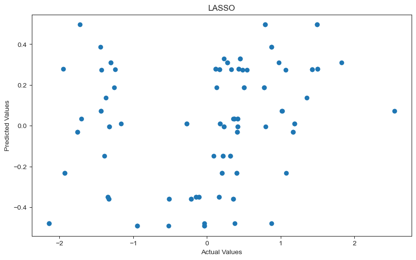
#Finding training error
print("RMSE: ",rmse(lasso_pred_ss, y_train_ss))
print("R^2 score: ",r2_score(y_train_ss, lasso_pred_ss))
RMSE: 0.9566717188470474
R^2 score: 0.08477922235823498
Although the RMSE has decreased, it must be noted that the RMSE is also represented in standard units and therefore is quite high in comparison to the data. A better metric is the R^2 which remains the same even after standardizing the features.
Next, a similar alpha tuning is performed on the new standardized model and then run on the test data.
from sklearn.model_selection import cross_val_score
lasso_model2 = Lasso(normalize=True) # Initializing model
alphas = np.linspace(0.01, 0.1, 100) # Alphas to test
cv_values = [] # Initialize array to store errors
train_values = []
for alpha in alphas: # Finding CV and train errors for each alpha value
# Setting alpha parameter
lasso_model2.set_params(alpha=alpha)
# Finding average CV error
cv_values.append(np.mean(cross_val_score(lasso_model2, X_train_ss, y_train_ss,cv=5,scoring = rmse_score)))
# Fitting model
lasso_model2.fit(X_train_ss, y_train_ss)
#Predictng
lasso_preds_train = lasso_model2.predict(X_train_ss)
# Finding training error
train_values.append(rmse(lasso_preds_train, y_train_ss))
min_index = list(cv_values).index(min(cv_values))
best_alpha = alphas[min_index]
best_alpha
0.023636363636363636
#Fit new alpha value on training data
lasso_fit4 = Lasso(normalize=True,alpha=best_alpha)
lasso_fit4.fit(X_train_ss, y_train_ss)
new_predictions = lasso_fit4.predict(X_train_ss)
print("RMSE: ",rmse(new_predictions, y_train_ss))
print("R^2 score: ",r2_score(y_train_ss, new_predictions))
RMSE: 0.9999999999999999
R^2 score: 0.0
#Running on test data
lasso_fit4.fit(X_test_ss, y_test_ss)
new_predictions = lasso_fit4.predict(X_test_ss)
print("RMSE: ",rmse(new_predictions, y_test_ss))
print("R^2 score: ",r2_score(y_test_ss, new_predictions))
RMSE: 0.9445149202418808
R^2 score: 0.10789156544047351
As can be seen by the R^2 score above, tuning the model did little to improve its effectiveness.
Data cleaning and selection of US data
Next we will test our model on a new data set: the US.
The data has been cleaned and compiled similarly to the data used for the regresion model.
# Test model on USA
ghg_us = ghg_only[ghg_only['country_or_area']=='United States of America']
ghg_us = ghg_us[ghg_us['year'].isin(np.arange(1990,2011))]
indicators_us = indicators_nan[indicators_nan['Country name']=='United States']
indicators_us = indicators_us.drop(['Country code','SCALE','Decimals','Series name'], axis=1)
indicators_us.head()
| Country name | Series code | 1990 | 1991 | 1992 | 1993 | 1994 | 1995 | 1996 | 1997 | ... | 2002 | 2003 | 2004 | 2005 | 2006 | 2007 | 2008 | 2009 | 2010 | 2011 | |
|---|---|---|---|---|---|---|---|---|---|---|---|---|---|---|---|---|---|---|---|---|---|
| 684 | United States | AG.YLD.CREL.KG | 4755.100000 | 4510.200000 | 5360.500000 | 4301.100000 | 5563.300000 | 4644.700000 | 5177.400000 | 5277.600000 | ... | 5547.400000 | 6024.000000 | 6851.600000 | 6451.000000 | 6400.100000 | 6704.300000 | 6619.900000 | 7238.400000 | NaN | NaN |
| 917 | United States | BX.KLT.DINV.WD.GD.ZS | 0.840000 | 0.390000 | 0.320000 | 0.780000 | 0.660000 | 0.790000 | 1.120000 | 1.280000 | ... | 0.800000 | 0.570000 | 1.240000 | 0.900000 | 1.820000 | 1.580000 | 2.170000 | 1.130000 | 1.62 | NaN |
| 1383 | United States | EG.USE.COMM.GD.PP.KD | 240.290000 | 242.890000 | 239.600000 | 237.000000 | 231.860000 | 228.990000 | 225.540000 | 217.990000 | ... | 196.240000 | 191.890000 | 189.070000 | 184.330000 | 177.820000 | 177.490000 | 172.970000 | 168.810000 | 169.59 | NaN |
| 1616 | United States | EG.USE.PCAP.KG.OE | 7671.550000 | 7631.520000 | 7677.390000 | 7709.840000 | 7757.140000 | 7763.370000 | 7844.010000 | 7828.540000 | ... | 7838.520000 | 7788.320000 | 7875.280000 | 7840.530000 | 7691.690000 | 7749.230000 | 7481.020000 | 7045.170000 | 7231.80 | NaN |
| 3713 | United States | EN.CLC.GHGR.MT.CE | -846.554878 | -818.679731 | -804.464713 | -758.572584 | -850.050344 | -795.375724 | -679.822703 | -727.705738 | ... | -830.615927 | -980.170627 | -1033.640402 | -1027.881749 | -1014.528899 | -1013.383977 | -1007.251509 | -990.061776 | NaN | NaN |
5 rows × 24 columns
us_pivot = pd.pivot_table(indicators_us, columns='Series code').reset_index().rename(columns={'index':'year'})
us_pivot.head()
| Series code | year | AG.YLD.CREL.KG | BX.KLT.DINV.WD.GD.ZS | EG.USE.COMM.GD.PP.KD | EG.USE.PCAP.KG.OE | EN.CLC.GHGR.MT.CE | EN.URB.MCTY.TL.ZS | ER.LND.PTLD.ZS | NY.GDP.MKTP.CD | NY.GNP.PCAP.CD | SH.DYN.MORT | SP.POP.GROW | SP.POP.TOTL | SP.URB.GROW | SP.URB.TOTL |
|---|---|---|---|---|---|---|---|---|---|---|---|---|---|---|---|
| 0 | 1990 | 4755.1 | 0.84 | 240.29 | 7671.55 | -846.554878 | 41.56 | 14.78 | 5.750800e+12 | 23260.0 | 11.3 | 1.13 | 249623000.0 | 1.34 | 187966119.0 |
| 1 | 1991 | 4510.2 | 0.39 | 242.89 | 7631.52 | -818.679731 | 41.65 | 14.78 | 5.930700e+12 | 23460.0 | 10.9 | 1.34 | 252981000.0 | 1.87 | 191506617.0 |
| 2 | 1992 | 5360.5 | 0.32 | 239.60 | 7677.39 | -804.464713 | 41.72 | 14.79 | 6.261800e+12 | 24810.0 | 10.5 | 1.39 | 256514000.0 | 1.91 | 195207154.0 |
| 3 | 1993 | 4301.1 | 0.78 | 237.00 | 7709.84 | -758.572584 | 41.83 | 14.79 | 6.582900e+12 | 25550.0 | 10.1 | 1.32 | 259919000.0 | 1.84 | 198838035.0 |
| 4 | 1994 | 5563.3 | 0.66 | 231.86 | 7757.14 | -850.050344 | 41.98 | 14.80 | 6.993300e+12 | 26820.0 | 9.8 | 1.23 | 263126000.0 | 1.75 | 202343894.0 |
us_pivot['year'] = us_pivot['year'].astype(int)
final_us = us_pivot.merge(ghg_us,left_on='year',right_on='year').drop(['category','country_or_area'],axis=1).dropna()
cols_us1 = final_us.columns.tolist()
cols_us1 = cols_us1[-1:] + cols_us1[:-1]
final_us2 = final_us[cols_us1]
final_us2.head()
| value | year | AG.YLD.CREL.KG | BX.KLT.DINV.WD.GD.ZS | EG.USE.COMM.GD.PP.KD | EG.USE.PCAP.KG.OE | EN.CLC.GHGR.MT.CE | EN.URB.MCTY.TL.ZS | ER.LND.PTLD.ZS | NY.GDP.MKTP.CD | NY.GNP.PCAP.CD | SH.DYN.MORT | SP.POP.GROW | SP.POP.TOTL | SP.URB.GROW | SP.URB.TOTL | |
|---|---|---|---|---|---|---|---|---|---|---|---|---|---|---|---|---|
| 0 | 6397144.490 | 1990 | 4755.1 | 0.84 | 240.29 | 7671.55 | -846.554878 | 41.56 | 14.78 | 5.750800e+12 | 23260.0 | 11.3 | 1.13 | 249623000.0 | 1.34 | 187966119.0 |
| 1 | 6330937.886 | 1991 | 4510.2 | 0.39 | 242.89 | 7631.52 | -818.679731 | 41.65 | 14.78 | 5.930700e+12 | 23460.0 | 10.9 | 1.34 | 252981000.0 | 1.87 | 191506617.0 |
| 2 | 6448677.154 | 1992 | 5360.5 | 0.32 | 239.60 | 7677.39 | -804.464713 | 41.72 | 14.79 | 6.261800e+12 | 24810.0 | 10.5 | 1.39 | 256514000.0 | 1.91 | 195207154.0 |
| 3 | 6566415.856 | 1993 | 4301.1 | 0.78 | 237.00 | 7709.84 | -758.572584 | 41.83 | 14.79 | 6.582900e+12 | 25550.0 | 10.1 | 1.32 | 259919000.0 | 1.84 | 198838035.0 |
| 4 | 6650296.595 | 1994 | 5563.3 | 0.66 | 231.86 | 7757.14 | -850.050344 | 41.98 | 14.80 | 6.993300e+12 | 26820.0 | 9.8 | 1.23 | 263126000.0 | 1.75 | 202343894.0 |
Run LASSO Regression
X_us = final_us2.drop(['value'],axis=1)
y_us = final_us2['value']
#Standard Scalar values
X_us_ss=pd.DataFrame(ss.fit_transform(X_us))
y_us_ss = (y_us - np.mean(y_us))/np.std(y_us)
# use the model to make predictions
lasso_pred_us = lasso_fit4.predict(X_us_ss)
# plot the predictions
fig, scatter = plt.subplots(figsize = (10,6), dpi = 100)
plt.scatter(y_us_ss,lasso_pred_us)
plt.xlabel('Actual Values')
plt.ylabel('Predicted Values')
plt.title('USA LASSO');
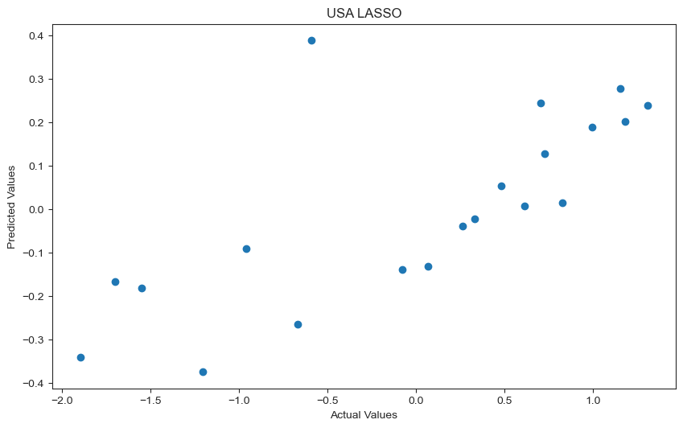
fig, scatter = plt.subplots(figsize = (10,6), dpi = 100)
plt.scatter(np.arange(len(y_us)),(y_us_ss-lasso_pred_us))
plt.title('Residual Plot');
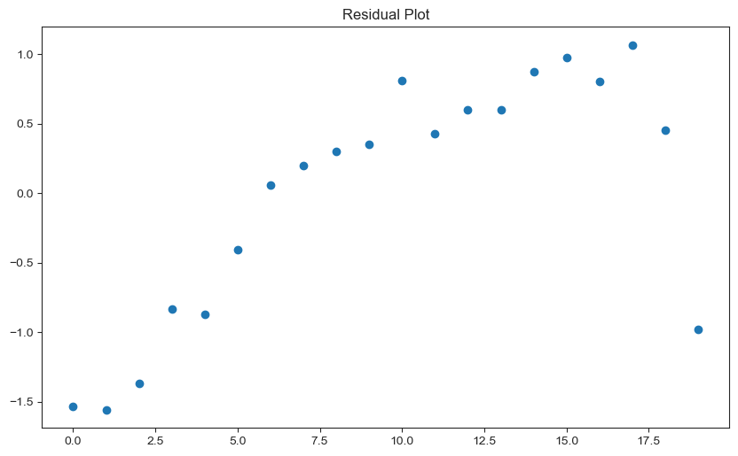
#Finding error
print("RMSE: ",rmse(lasso_pred_us, y_us))
print("R^2 score: ",r2_score(y_us, lasso_pred_us))
RMSE: 6985258.991728892
R^2 score: -419.5577504712653
From the above two graphs it is apparent that a LASSO model does not do well in predicting the greenhouse gas emissions of a country. The residual plot shows a pattern which suggests that there are some inherent relationships that are not captured by our model.
This goes to show that using regression to predict the effects of climate policy on greenhouse gas emissions is ineffective and tricky since the covariates and outcome variable do not have a direct relationship as we explored previously.